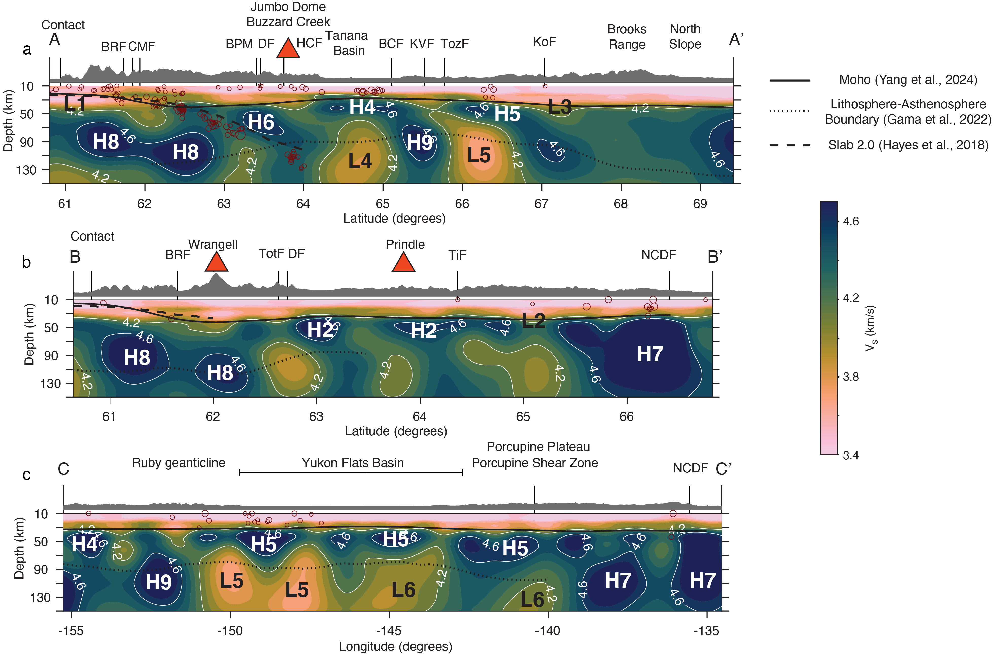
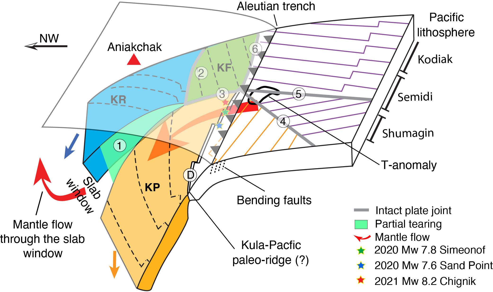
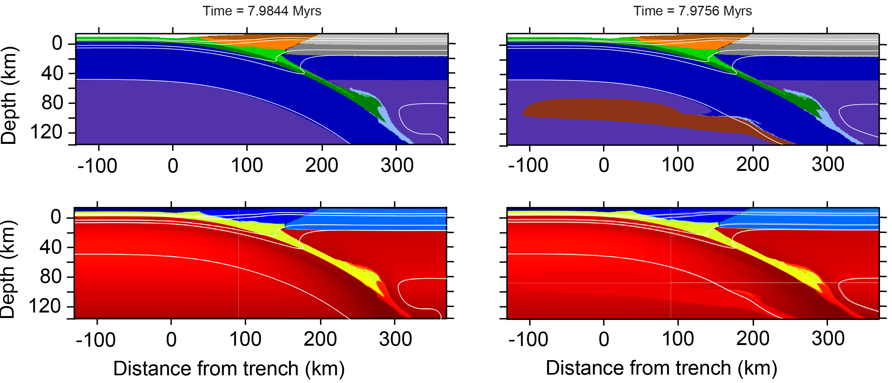
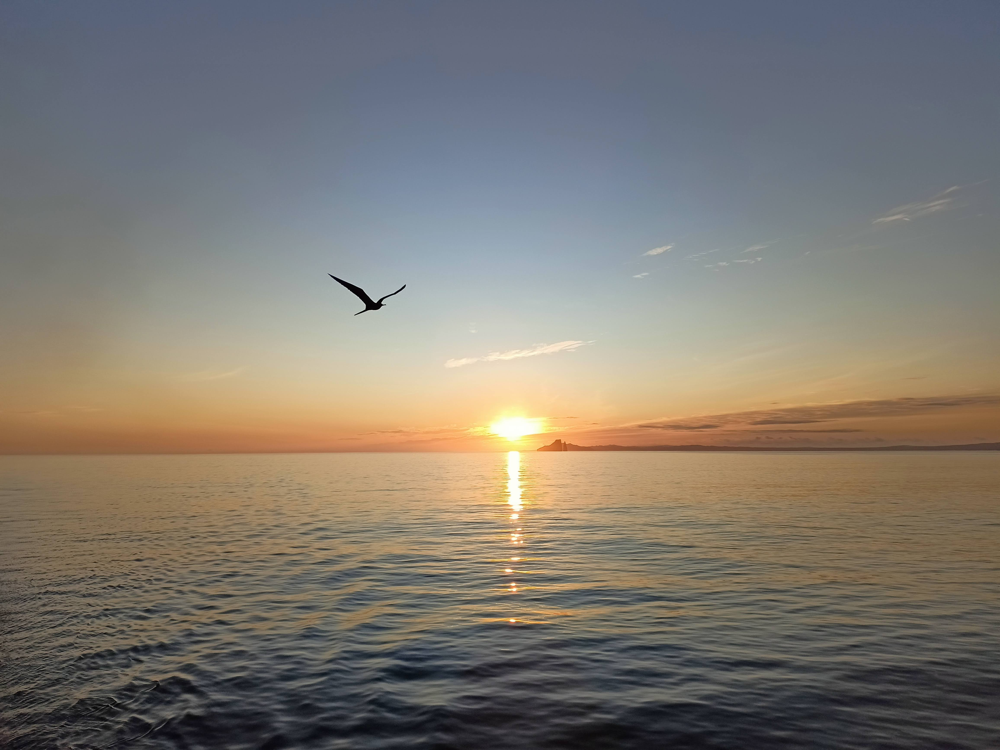
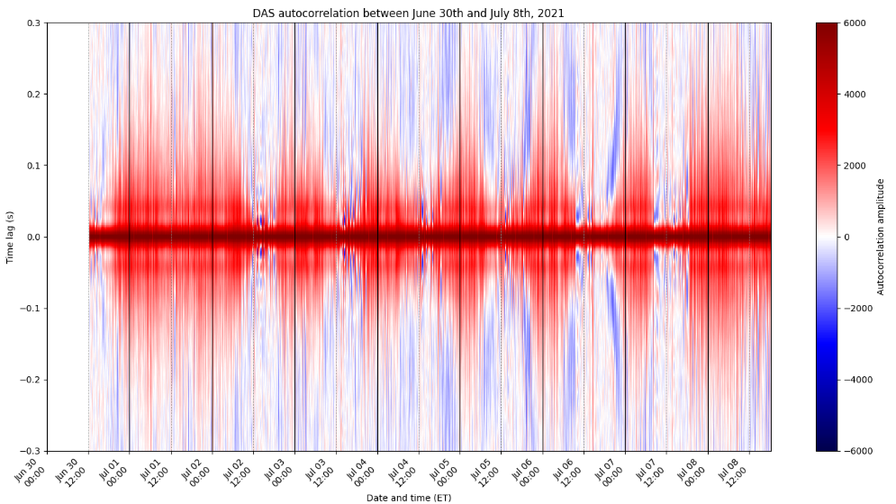

Linking the deep Earth to the surface.
Focus Areas

Applying full-wave ambient noise tomography and Ps receiver functions to more than 500 seismic stations across Alaska and the Yukon Territory, I constructed a three-dimensional shear wave velocity model and mapped Moho and lithospheric discontinuities throughout the region. In this study, I focus on northeastern Alaska and the Yukon Territory, in particular the Yukon Flats Basin. I find that the lithosphere beneath the Yukon Flats Basin is particularly thin due to transtension and it is intruded by the asthenosphere along the Tintina Fault and the Porcupine Shear Zone whose damaged rocks facilitate magma transport.

Using full-wave ambient noise tomography and shear wave splitting with the Alaska Amphibious Community Seismic Experiment (AACSE), I constructed a three-dimensional shear wave velocity model and measured shear wave splitting in the Alaska Peninsula. Key findings include evidence of slab tearing along a subducted oceanic plate joint beneath the Alaska Peninsula (published in Nature Geoscience, 2025) and lithospheric anisotropy aligned with paleospreading direction (preliminary results accessible at ESSOAR).

In my MSc thesis at Universiteit Utrecht, I leveraged multi-scale numerical modeling to investigate the influence of sub-slab buoyancy and oceanic plate age on the long-term evolution of geometry of the slab, the megathrust, and the overriding plate, and the evolution of plate coupling at the seismic cycle scale. This work contributed to ongoing discussion about the relationship between the sub-slab asthenosphere and overlying deformation.

As part of the Marine IGUANA experiment, I participated in the recovery of Ocean Bottom Seismometers around the Galápagos hotspot and spreading center, aboard the R/V Sally Ride (2024). This cruise involved seismic data analysis, multi-beam bathymetry correction, and deployment of oceanographic instruments. I am currently collaborating with researchers at the University of Hawaii who are investigating the plum-ridge interactions using shear wave splitting.

During a research internship at PennState University with Dr. Tieyuan Zhu, I was developing a workflow to process Distributed Acoustic Sensing data for seismic monitoring of the soil properties in the Susquehanna Shale Hills Critical Zone Observatory. The goal was to link the changes in seismic properties of the soil to atmospheric events such as storms.
Experience